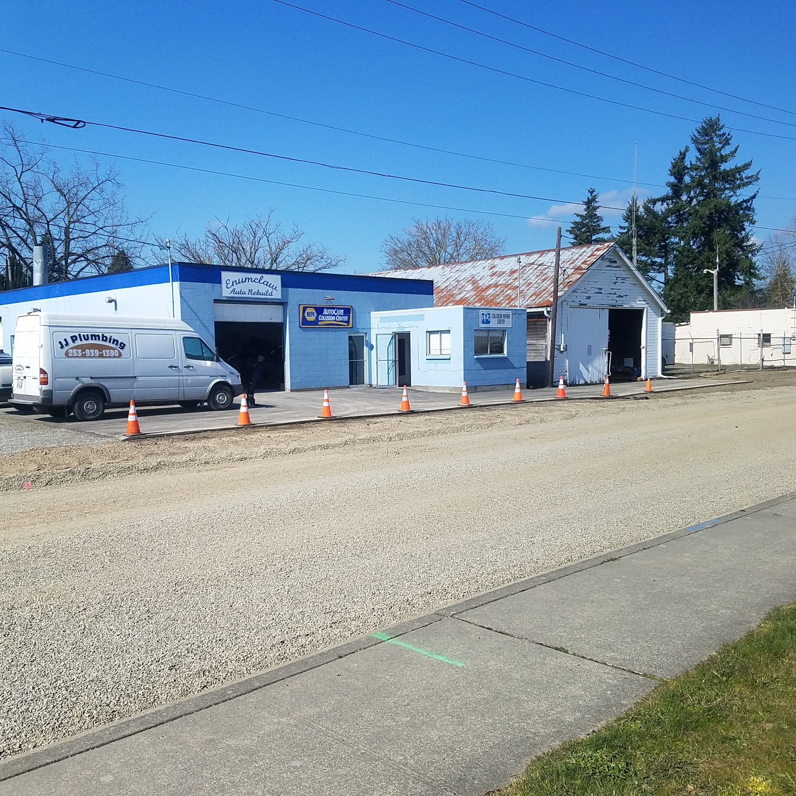

- Somebody rear-ended you and their insurance is paying
- You backed into something and you're paying yourself
- A deer, a fence post, a shopping cart, a garage door
- An adjuster already wrote an estimate and you want a shop to actually do the work
- Dents, creased panels and bumpers that don't line up any more
The shop
Fixing plateau cars since 1944
Enumclaw was a mill and dairy town of a few thousand people when this shop started straightening cars. It is still here, still on Railroad Street, still doing the same two things.
Steve Maris runs it now. The reviews that exist say the same thing about him more than once: he tells you where the car is at, he works with your insurance agent instead of against them, and it comes back when he said it would.
There's no waiting room full of brochures and no call centre. There's a phone, a shop, and somebody who knows what your car needs — which on a plateau this size is most of what anybody actually wants.
The short version
- TradesAuto body, collision, glass
- OwnerSteve Maris
- StreetRailroad St at Washington Ave
- WorkingWeekdays, 8 to 5
- PaysVisa · Mastercard · Amex · debit
